Building the notation while building a tiny GPT
A transformer becomes easier to inspect when its executable definitions retain the shape of its equations. Fortress gets remarkably close for sums, inner products, normalization and matrix products, but those expressions require a scalar algebra, finite containers and a reduction implementation. This article builds those layers together. The selected implementation runs forward prediction, reverse differentiation, one Adam update and autoregressive generation; every numerical field of a small independent Python fixture passes.
This is a one-block, two-head microGPT with width four, context three and vocabulary three: 228 parameters. It follows Karpathy's microGPT, using the pinned Python revision. Its SHA-256 is d47d88c2fd432c8ebdc1048beab7f7eb64ea7e0e664e11b812d72a6d95ebccee. The fixture replaces random initialization and sampling with specified numbers. It does not download names, build a character vocabulary, or train for 1,000 steps. Thus it demonstrates the complete numerical path, not a trained name generator or arbitrary configurable GPT package.
Read the executable source beside this article. All Fortress figures below are actual Fortify output extracted from that executed source, or from the separately executed alternative. Formula captions are explanatory mathematics; the program beneath them is not a hand-typeset substitute. Small Python fragments are equivalent comparisons unless explicitly described as upstream code.
1. Make a scalar remember how it was computed
For an operation , reverse differentiation uses and , where . The forward result must therefore retain references to both inputs and the two local derivatives.
Python's Value object records children=(x,y) and local_grads=(y.data,x.data). Fortress uses V(primal,index,parents): primal is the floating-point value, index identifies a parameter or is −1 for a temporary, and parents stores zero, one or two derivative edges. The constructor binary creates a V with TwoParents; multiplication is a user-defined juxtaposition operator.
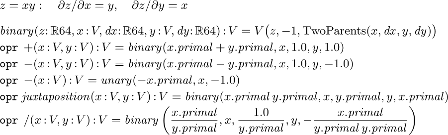
Scalar operations and their derivative edges
FORTRESS · ASCII SOURCE
binary(z:RR64,x:V,dx:RR64,y:V,dy:RR64):V = V(z,-1,TwoParents(x,dx,y,dy))
opr + (x:V,y:V):V = binary(x.primal + y.primal,x,1.0,y,1.0)
opr -(x:V,y:V):V = binary(x.primal-y.primal,x,1.0,y,-1.0)
opr -(x:V):V = unary(-x.primal,x,-1.0)
opr juxtaposition(x:V,y:V):V = binary(x.primal y.primal,x,y.primal,y,x.primal)
opr /(x:V,y:V):V = binary(x.primal/y.primal,x,1.0/y.primal,y,-x.primal/(y.primal y.primal))PYTHON · COMPARISON
def mul(x, y):
return Value(x.data * y.data,
children=(x, y),
local_grads=(y.data, x.data))Equivalent teaching excerpt; names may be shortened. The pinned upstream source remains the numerical reference.
opr +(x:V,y:V) gives ordinary addition its differentiated meaning. opr juxtaposition(x:V,y:V) makes x y multiplication. Unary minus, division, square root, exponentiation, exponential, logarithm and ReLU complete the scalar vocabulary; mixed RR64 overloads insert constant nodes. The multiplication figure shows the actual local partials passed to binary, so the concise notation does not conceal the chain rule.
To compute a gradient, visit marks each node once, visits its parents, then prepends it to a linked chain. This places every result before its parents in the reverse traversal. Seed the loss adjoint with 1; push adds each local derivative times the current adjoint into its parent. A parameter node also adds to the output array at its immutable parameter index. Finally clear resets the visited flags and adjoints for another sequential gradient call.
Shared subexpressions matter: two uses of the same node must both contribute, while its parents must be propagated only after those contributions accumulate. Traversal takes O(nodes + edges), rather than recursively propagating once per path. The retained scalar probe checks repeated gradients, a shared diamond with paths, and an 8,191-node tree. This implementation uses recursive traversal and a linked reverse chain, so the demonstrated interpreter runs use a 32 MB Java stack. It is educational machinery, not an industrial autodiff engine.
Graph construction allocates fresh nodes and immutable edges, without a shared allocation counter. Mutations of seen and adjoint occur during the sequential reverse phase. Concurrent gradient calls on overlapping graphs are unsupported; ordinary independent forward cells need not be serialized.
2. Store finite vectors without losing graph sharing
Mathematical notation treats as a selection, not a recomputation. Accordingly Vec(n,f) evaluates f(i) once per cell and stores the resulting scalar node; Mat(m,n,f) stores rows of these vectors. Python would use [f(i) for i in range(n)] and nested lists.
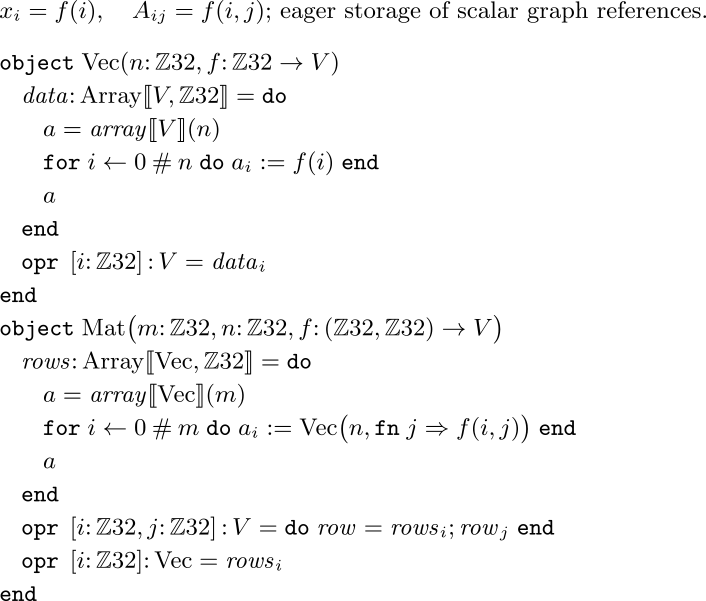
Eager vector and matrix constructors
FORTRESS · ASCII SOURCE
object Vec(n:ZZ32, f:ZZ32->V)
data:Array[\V,ZZ32\] = do
a = array[\V\](n)
for i <- 0#n do a[i] := f(i) end
a
end
opr[i:ZZ32]:V = data[i]
end
object Mat(m:ZZ32,n:ZZ32,f:(ZZ32,ZZ32)->V)
rows:Array[\Vec,ZZ32\] = do
a = array[\Vec\](m)
for i <- 0#m do a[i] := Vec(n,fn j => f(i,j)) end
a
end
opr[i:ZZ32,j:ZZ32]:V = do row = rows[i]; row[j] end
opr[i:ZZ32]:Vec = rows[i]
endPYTHON · COMPARISON
vector = [f(i) for i in range(n)]
matrix = [[f(i, j) for j in range(n)]
for i in range(m)]Equivalent teaching excerpt; names may be shortened. The pinned upstream source remains the numerical reference.
The enclosing operator opr[i:ZZ32] supplies subscripting. For a matrix, opr[i,j] first binds a row, then indexes it. That local binding is deliberate: this interpreter failed on a directly chained rows[i][j] expression. The dimensions are ordinary runtime fields; these types do not prove shape compatibility. The fixture supplies compatible shapes, and a general-purpose library would need shape checks or stronger dimension types.
Why define containers at all? The shipped Vector requires T extends Number, and this checkout's Number is a closed comprises { RR64 } hierarchy. A new graph scalar cannot simply join that hierarchy. These small containers are a user-level design choice around that library constraint, not evidence that Fortress has no vector abstraction. See the library API, the Number and Vector declarations.
3. Teach summation to the scalar algebra
A matrix product needs . A loop can compute it, but a summation communicates the contraction directly. The scalar + overload is only half the construction: the big operator also needs a reduction identity and a way to join terms.
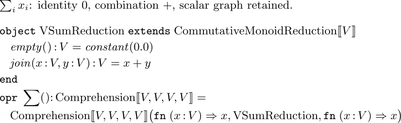
The actual ordinary SUM implementation
FORTRESS · ASCII SOURCE
object VSumReduction extends CommutativeMonoidReduction[\V\]
empty():V = constant(0.0)
join(x:V,y:V):V = x + y
end
opr SUM():Comprehension[\V,V,V,V\] =
Comprehension[\V,V,V,V\](fn (x:V) => x,VSumReduction,fn (x:V) => x)PYTHON · COMPARISON
total = sum(values)
# Each addition retains derivative edges.
# Fortress additionally defines the reduction identity
# and join operation for its graph scalar.Equivalent teaching excerpt; names may be shortened. The pinned upstream source remains the numerical reference.
VSumReduction extends the library's CommutativeMonoidReduction[V]. Its empty sum is constant(0.0); its join constructs a differentiated sum node. Comprehension[V,V,V,V] supplies identity mappings around that reduction. Defining zero-argument opr SUM() lets the generator expression SUM[i <- 0#n] ... use this algebra. The range 0#n means the n indices starting at zero, so its last element is n-1.
There is an essential import detail:
import FortressLibrary.{...} except { opr BIG + }
The standard big addition spelling collides with the local sum declaration unless excluded. The completed namespace probe demonstrates ordinary SUM after this exclusion; a failed initial overload attempt was not a language limit. We retain numeric maximum separately as BIG MAXNUM.
The reduction API supplies the inherited abstraction; our identity, join and comprehension instance supply the new behavior. Floating-point addition is not exactly associative. This uses the same mathematical reduction convention as numerical summation generally: reassociation may change rounding. We compare with tolerances and do not force a serial sum merely to reproduce Python's order. The generator specification requires assuming parallel iterations unless the generator is sequential.
4. Build linear algebra from the sum
Python's upstream linear layer is a nested comprehension: [sum(wi*xi for wi,xi in zip(row,x)) for row in W]. Fortress puts the row selection and reduction inside a matrix-vector juxtaposition overload. Dot product gets its own DOT operator.
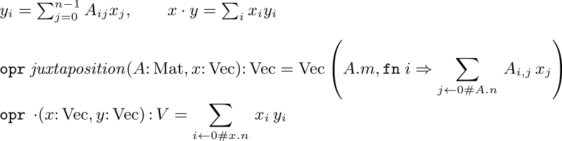
Matrix-vector multiplication and dot product
FORTRESS · ASCII SOURCE
opr juxtaposition(A:Mat,x:Vec):Vec = Vec(A.m,fn i => SUM[j <- 0#A.n] A[i,j] x[j])
opr DOT(x:Vec,y:Vec):V = SUM[i <- 0#x.n] x[i] y[i]PYTHON · COMPARISON
def linear(x, W):
return [sum(wi * xi for wi, xi in zip(row, x))
for row in W]
def dot(x, y):
return sum(xi * yi for xi, yi in zip(x, y))
Equivalent teaching excerpt; names may be shortened. The pinned upstream source remains the numerical reference.
The resulting model can write W x and x DOT x; Fortify displays the latter with a central dot. We chose that dot over vector-vector juxtaposition because x x is visually ambiguous. Matrix-vector juxtaposition remains recognizable. This separation is a convention of this little algebra, rather than a new compiler feature. Fortress's juxtaposition rules distinguish function application from operator application by the left operand.
Vector addition, division by a scalar, subtraction of a numeric shift, exp and relu are pointwise Vec constructors. For example, the complete vector division definition is opr /(x:Vec,s:V):Vec = Vec(x.n,fn i => x[i]/s). These overloads account for the vector-level notation used below; a paper's short fraction is supported by actual cellwise computation.
5. Normalize scale, then turn scores into probabilities
RMS normalization divides by the root mean square with a small stabilizer. It has no learned gain or bias here, matching microGPT. Python computes ms=sum(xi*xi for xi in x)/len(x), then scale=(ms+1e-5)**-0.5, then returns [xi*scale for xi in x].
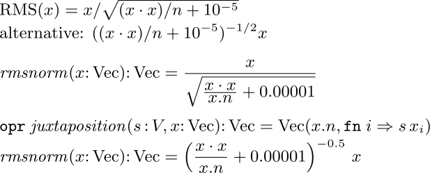
RMS quotient and inverse-power alternatives
FORTRESS · ASCII SOURCE
rmsnorm(x:Vec):Vec = x/(SQRT((x DOT x)/x.n + 0.00001))
opr juxtaposition(s:V,x:Vec):Vec = Vec(x.n,fn i => s x[i])
rmsnorm(x:Vec):Vec = ((x DOT x)/x.n + 0.00001)^(-0.5) x
PYTHON · COMPARISON
ms = sum(xi * xi for xi in x) / len(x)
scale = (ms + 1e-5) ** -0.5
x = [xi * scale for xi in x]Equivalent teaching excerpt; names may be shortened. The pinned upstream source remains the numerical reference.
Both formulations in this figure were executed through the whole model and passed the same fixture, including gradients. The selected quotient places a radical under the vector, directly matching the target formula, and reuses vector division. The inverse-power alternative introduces scalar-vector multiplication and computes a scale first; that is closer to Python's operational form. Neither is mathematically superior. For teaching the formula, the quotient is the clearer local choice.
Tight division, written without spaces around /, is significant in Fortress's precedence rules and gives the actual stacked fraction here. Parentheses are part of the executable definition, not merely instructions to the renderer. An earlier wide figure clipped its Python caption; the final figures keep the formulas and source together and place Python in nearby prose.
Softmax transforms unrestricted scores into positive probabilities summing to one. Subtracting their maximum avoids unnecessarily large exponentials: adding or subtracting a common score does not change the distribution. Python computes exps=[(v-max_val).exp() for v in logits], then [e/sum(exps) for e in exps].
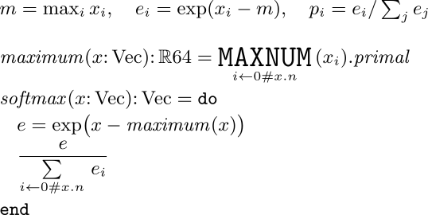
Stable softmax and numeric maximum
FORTRESS · ASCII SOURCE
maximum(x:Vec):RR64 = BIG MAXNUM[i <- 0#x.n] (x[i]).primal
softmax(x:Vec):Vec = do
e = exp(x-maximum(x))
e/(SUM[i <- 0#x.n] e[i])
endPYTHON · COMPARISON
shift = max(xi.data for xi in x)
e = [(xi - shift).exp() for xi in x]
total = sum(e)
p = [ei / total for ei in e]Equivalent teaching excerpt; names may be shortened. The pinned upstream source remains the numerical reference.
The maximum is taken on primal values, just as in the pinned Python. It is a detached numerical shift; shift invariance makes this valid for differentiating the resulting softmax. It is not a general derivative rule for maximum. Ordinary summation now survives visibly as a sigma. MAXNUM still renders as a word rather than the paper's max: this is a demonstrated library/rendering departure, and the figure leaves it visible.
6. Attention contracts over the past
For a head of width , project the normalized current token to a query . Keep one key and value row for each position seen so far. Then measures the query's scaled similarity to each key. Softmax gives weights over those positions, and mixes the corresponding value coordinates. The figure calls the value matrix W to avoid confusing it with scalar type V.
Python spells the two contractions as sum(q[j]*K[t][j] for j in range(s)) and sum(a[t]*W[t][j] for t in range(T)) inside outer comprehensions.
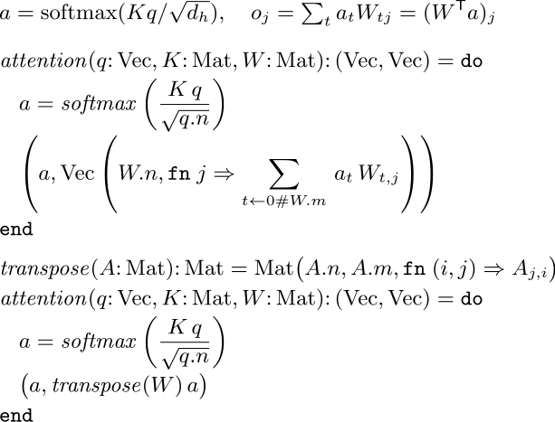
Direct attention contraction and transposed-matrix alternative
FORTRESS · ASCII SOURCE
attention(q:Vec,K:Mat,W:Mat):(Vec,Vec) = do
a = softmax((K q)/(SQRT(q.n)))
(a,Vec(W.n,fn j => SUM[t <- 0#W.m] a[t] W[t,j]))
end
transpose(A:Mat):Mat = Mat(A.n,A.m,fn (i,j) => A[j,i])
attention(q:Vec,K:Mat,W:Mat):(Vec,Vec) = do
a = softmax((K q)/(SQRT(q.n)))
(a,transpose(W) a)
end
PYTHON · COMPARISON
scores = [sum(q[j] * K[t][j] for j in range(s))
/ s**0.5 for t in range(T)]
a = softmax(scores)
o = [sum(a[t] * W[t][j] for t in range(T))
for j in range(s)]Equivalent teaching excerpt; names may be shortened. The pinned upstream source remains the numerical reference.
The chosen version exposes the time reduction explicitly. The alternative reuses matrix-vector multiplication as transpose(W) a, with a user-defined transpose constructor. This is a substantive alternate formulation and also passed the full numerical check. It allocates a transposed matrix of references; our straightforward implementation does not provide a lazy transpose view. Fortify renders the function name transpose, not a superscript T. The alternate is shorter at the call site, but the direct sum better shows which axis is contracted without adding another representation operation.
Causality comes from construction: at position t, the matrices contain only t+1 cache rows. There is no future row to mask. Token positions run through sequential(0#3) because later positions read earlier cache entries. Heads can be formed independently, and each writes a distinct output and attention-weight slot. The output weights are returned alongside the values for inspection; only the values feed the next layer.
7. Assemble a transformer block and predict the next token
Each head gets a contiguous slice of the projected query, keys and values. Concatenate the head outputs, apply the output matrix, and add the incoming residual. A second pre-normalized branch applies an expanding matrix, ReLU, and a contracting matrix before another residual addition. The expansion factor is four.
Python uses explicit elementwise lists for residual addition and x_attn.extend(head_out) for concatenation. The selected Fortress definitions below make both residual equations visible, while concatenation remains explicit index arithmetic.
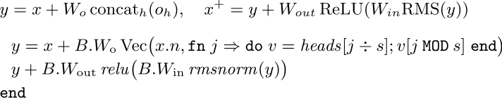
Residual attention and MLP equations
FORTRESS · ASCII SOURCE
y = x + B.W_o Vec(x.n,fn j => do v = heads[j DIV s]; v[j MOD s] end)
y + B.W_out relu(B.W_in rmsnorm(y))
endPYTHON · COMPARISON
joined = [value for head in heads for value in head]
y = [xi + oi for xi, oi in zip(x, linear(joined, Wo))]
hidden = [v.relu() for v in linear(rmsnorm(y), Win)]
x = [yi + oi for yi, oi in zip(y, linear(hidden, Wout))]Equivalent teaching excerpt; names may be shortened. The pinned upstream source remains the numerical reference.
heads[j DIV s] chooses the head; j MOD s chooses its feature. This is less fluent than a paper's concat. It is a justified small-container implementation choice, not a claim that a concatenation operator is impossible. The local v binding also avoids chained subscripting in the interpreter.
Token and position embeddings are rows of learned matrices. Add them, normalize, apply the block, then project through the unembedding matrix to obtain vocabulary logits. Python starts with x=[t+p for t,p in zip(tok_emb,pos_emb)] and ends with linear(x,lm_head).
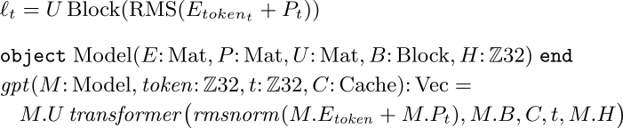
Embedding and complete one-block prediction
FORTRESS · ASCII SOURCE
object Model(E:Mat,P:Mat,U:Mat,B:Block,H:ZZ32) end
gpt(M:Model,token:ZZ32,t:ZZ32,C:Cache):Vec =
M.U transformer(rmsnorm(M.E[token] + M.P[t]),M.B,C,t,M.H)PYTHON · COMPARISON
x = [e + p for e, p in zip(E[token], P[t])]
x = rmsnorm(x)
x = transformer_block(x, block, cache, t)
logits = linear(x, U)Equivalent teaching excerpt; names may be shortened. The pinned upstream source remains the numerical reference.
The first RMS normalization and the block's own pre-normalization are both retained. The residual branch means dropping the first is not generally equivalent. There is no positional rotation, dropout, bias, learned normalization gain, or final normalization added to this pinned microGPT architecture.
8. A scalar loss connects the whole graph
For input tokens [2,0,1], the targets are [0,1,2]. At each position, negative log probability penalizes the model for assigning little mass to the actual next token. Mean cross-entropy is .
Python uses losses.append(-probs[target_id].log()), then loss=sum(losses)/n and loss.backward().
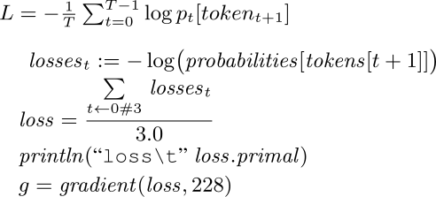
Executed per-position loss, mean and gradient call
FORTRESS · ASCII SOURCE
losses[t] := -log(probabilities[tokens[t + 1]])
loss = (SUM[t <- 0#3] losses[t])/3.0
println("loss\t" loss.primal)
g = gradient(loss,228)PYTHON · COMPARISON
losses.append(-probs[target_id].log())
loss = sum(losses) / len(losses)
loss.backward()Equivalent teaching excerpt; names may be shortened. The pinned upstream source remains the numerical reference.
All three losses share parameter nodes through the model and share earlier cache graphs where attention uses them. gradient(loss,228) traverses the combined graph and returns every parameter derivative. Parameter identities are fixed by global row-major offsets when matrices are built, so forward evaluation order does not determine their identities.
9. Update parameters, then generate with a fresh cache
Adam keeps exponentially smoothed gradients and squared gradients . Bias correction divides by at one-based step . A linearly decaying learning rate controls the update; epsilon stabilizes the denominator.
Python updates m[i]=beta1*m[i]+(1-beta1)*g, similarly updates v, computes the two corrected moments, then subtracts lr*m_hat/(sqrt(v_hat)+eps) from the parameter.
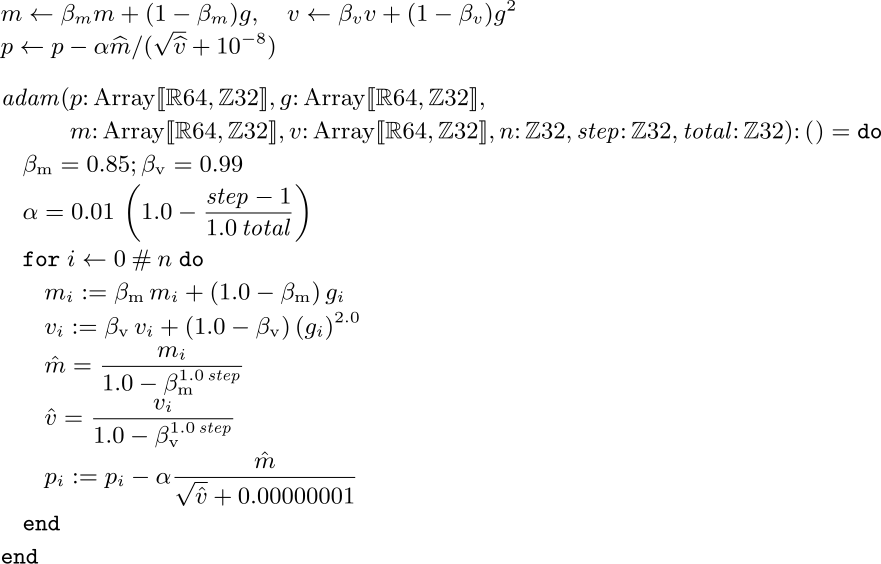
Executed Adam update with bias correction
FORTRESS · ASCII SOURCE
adam(p:Array[\RR64,ZZ32\],g:Array[\RR64,ZZ32\],
m:Array[\RR64,ZZ32\],v:Array[\RR64,ZZ32\],n:ZZ32,step:ZZ32,total:ZZ32):() = do
beta_m = 0.85; beta_v = 0.99
alpha = 0.01 (1.0-(step-1)/(1.0 total))
for i <- 0#n do
m[i] := beta_m m[i] + (1.0-beta_m) g[i]
v[i] := beta_v v[i] + (1.0-beta_v) (g[i])^2.0
m_hat = m[i]/(1.0-beta_m^(1.0 step))
v_hat = v[i]/(1.0-beta_v^(1.0 step))
p[i] := p[i] - alpha m_hat/(SQRT(v_hat) + 0.00000001)
end
endPYTHON · COMPARISON
m[i] = beta1 * m[i] + (1 - beta1) * g
v[i] = beta2 * v[i] + (1 - beta2) * g**2
mhat = m[i] / (1 - beta1**step)
vhat = v[i] / (1 - beta2**step)
p[i] -= lr * mhat / (vhat**0.5 + 1e-8)Equivalent teaching excerpt; names may be shortened. The pinned upstream source remains the numerical reference.
The Fortress routine takes one-based step; consequently step-1 appears in learning-rate decay. The fixture performs step=1,total=1, starting both moment arrays at zero. At that step, the independently checked update simplifies to . Later optimizer steps are implemented by the routine but are outside this fixture's demonstrated numerical coverage.
The parenthesized (g[i])^2.0 in the figure is intentional. An unparenthesized indexed base failed in this interpreter even though the specification gives subscripting and superscripting left-associative precedence. Changing only the exponent did not repair it; grouping the indexed value did. The saved run logs preserve that integration failure.
Generation constructs a model from the updated parameters and uses a fresh cache. Begin with BOS token 2; predict, divide logits by temperature 0.5, sample, feed the selected token back, and stop on BOS or the context limit. Python uses random.choices; the check injects uniforms into the equivalent inverse-CDF operation.
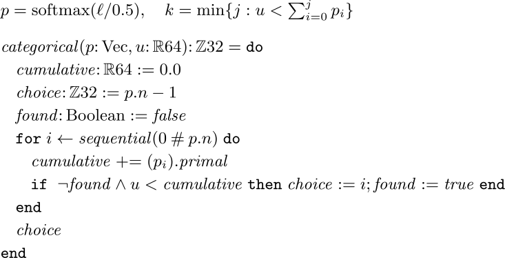
Categorical sampling with a supplied uniform
FORTRESS · ASCII SOURCE
categorical(p:Vec,u:RR64):ZZ32 = do
cumulative:RR64 := 0.0
choice:ZZ32 := p.n-1
found:Boolean := false
for i <- sequential(0#p.n) do
cumulative += (p[i]).primal
if NOT found AND u<cumulative then choice := i; found := true end
end
choice
endPYTHON · COMPARISON
probs = softmax([v / temperature for v in logits])
cumulative = 0.0
choice = len(probs) - 1
for j, p in enumerate(probs):
cumulative += p.data
if u < cumulative:
choice = j
breakEquivalent teaching excerpt; names may be shortened. The pinned upstream source remains the numerical reference.
The strict inequality implements half-open CDF intervals. Uniforms [0.1,0.5,0.9] select [0,1,2], including the terminating BOS. The fallback is the last category if roundoff leaves the accumulated total slightly below one. This function assumes a valid uniform in [0,1) and valid probabilities, as supplied by the fixture.
10. What has actually been established
The selected program's completed run took 4.438 seconds in the historical interpreter, including startup and TSV output. The alternative took 3.935 seconds. These single runs establish bounded feasibility, not a performance comparison. No long training was run.
| Quantity checked against Python | Coverage | Selected maximum absolute error |
|---|---|---|
| Initial parameters | 228 | 0 |
| Training logits | 9 | 5.56e-17 |
| Training probabilities | 9 | 0 |
| Attention weights | 12, both heads | 5.56e-17 |
| Mean loss | 1 | 0 |
| Gradients | 228 | 2.23e-16 |
| Updated parameters | 228 | 3.47e-16 |
| Generation logits and probabilities | 9 each | 5.56e-17 |
| Selected tokens and supplied uniforms | 3 each | 0 |
Loss is 1.147958783149666. The strict converter rejects missing cells, duplicates, unknown records and non-finite values; it inserts only static metadata. Both full models pass the independent validator at absolute tolerance 1e-12 and relative tolerance 1e-10. The Python gradients were separately checked by central differences for every parameter, with worst error 3.649e-10 at step 1e-6. See independent validation, full actual values, and error summary.
This evidence is stronger than matching one scalar loss, but it is still one deliberately small configuration. It does not establish every shape, multi-block behavior, all floating-point extremes, higher derivatives, large-graph stack safety, concurrent backwards, or trained text quality.
The selected form is canonical for this experiment: ordinary sum, matrix-vector juxtaposition, explicit vector dot, RMS quotient and explicit attention contraction. Actual alternative execution and visual inspection support those local choices; this specimen does not establish a unique optimum for Fortress or ML languages generally.
Reproduction and remaining departures
The reproduction guide gives the bounded commands and exact evidence locations. Figure extraction takes literal source slices, writes formula-captioned .tic sheets and records source hashes; experiment/render.py runs Fortify, LaTeX and dvisvgm. PNGs were inspected beside their mathematical captions. The two comparison figures were inspected before selecting the final formulations, and a clipped RMS caption was split and rendered again.
The support is not free: the executable contains the scalar graph, reduction, eager containers, vector overloads, cache representation, parameter mapping, optimizer and sampler before the fixture driver. The source inventory separates those from the short mathematical core and from test output. Rendering an entire transliteration alone would not have supplied the mathematical correspondences above.
| Remaining departure | Classification and evidence | Consequence |
|---|---|---|
Closed shipped Number/Vector scalar constraint |
Library design restriction, API declarations | Define user-level AD containers; no runtime changes |
| Local SUM collides with imported big addition | Namespace/import integration, successful excluded-import probe | Retain explicit import exclusion; ordinary sigma works |
MAXNUM and transpose remain words |
Observed library/rendering spelling | Figures show the actual mismatch; no claimed impossibility |
| Chained subscripting / indexed power fails | Interpreter gap relative to documented postfix precedence; saved failures | Bind intermediate row or parenthesize indexed base |
Concatenation uses DIV/MOD and a constructor |
Deliberate representation choice | More support visible than the paper's concat |
| Floating sum is not exactly associative | Numerical approximation in reduction abstraction | Permit parallel reassociation; compare with tolerances |
| Mutating reverse pass is sequential | Deliberate graph algorithm dependency | No concurrent gradients on shared nodes |
No compiler, interpreter or shipped library was modified to make these forms run. The open work for a revival is concrete: minimize and fix the subscripting regressions, consider AD-friendly generic numerical containers, and improve rendering conventions for the remaining named operations. The successful ordinary summation investigation should not be misreported as an unresolved language limit.
Complete executable · ASCII Fortress source
component MicroGPT
import FortressLibrary.{...} except { opr BIG + }
export Executable
trait Parents
visit(w:Walk):()
push(a:RR64):()
end
object NoParents extends Parents
visit(w:Walk):() = ()
push(a:RR64):() = ()
end
object OneParent(x:V,dx:RR64) extends Parents
visit(w:Walk):() = x.visit(w)
push(a:RR64):() = x.add(a dx)
end
object TwoParents(x:V,dx:RR64,y:V,dy:RR64) extends Parents
visit(w:Walk):() = do x.visit(w); y.visit(w) end
push(a:RR64):() = do x.add(a dx); y.add(a dy) end
end
trait Chain
backward(g:Array[\RR64,ZZ32\]):()
clear():()
end
object EmptyChain extends Chain
backward(g:Array[\RR64,ZZ32\]):() = ()
clear():() = ()
end
object Link(x:V,rest:Chain) extends Chain
backward(g:Array[\RR64,ZZ32\]):() = do
x.push(g)
rest.backward(g)
end
clear():() = do x.clear(); rest.clear() end
end
object Walk(seed:ZZ32)
stack:Chain := EmptyChain
prepend(x:V):() = stack := Link(x,stack)
end
object V(primal:RR64,index:ZZ32,parents:Parents)
seen:Boolean := false
adjoint:RR64 := 0.0
visit(w:Walk):() = if NOT seen then
seen := true
parents.visit(w)
w.prepend(self)
end
add(a:RR64):() = adjoint += a
push(g:Array[\RR64,ZZ32\]):() = do
if index >= 0 then g[index] += adjoint end
parents.push(adjoint)
end
clear():() = do seen := false; adjoint := 0.0 end
end
constant(x:RR64):V = V(x,-1,NoParents)
variable(i:ZZ32,x:RR64):V = V(x,i,NoParents)
unary(z:RR64,x:V,dx:RR64):V = V(z,-1,OneParent(x,dx))
binary(z:RR64,x:V,dx:RR64,y:V,dy:RR64):V = V(z,-1,TwoParents(x,dx,y,dy))
opr + (x:V,y:V):V = binary(x.primal + y.primal,x,1.0,y,1.0)
opr -(x:V,y:V):V = binary(x.primal-y.primal,x,1.0,y,-1.0)
opr -(x:V):V = unary(-x.primal,x,-1.0)
opr juxtaposition(x:V,y:V):V = binary(x.primal y.primal,x,y.primal,y,x.primal)
opr /(x:V,y:V):V = binary(x.primal/y.primal,x,1.0/y.primal,y,-x.primal/(y.primal y.primal))
opr + (x:V,y:RR64):V = x + constant(y)
opr + (x:RR64,y:V):V = constant(x) + y
opr -(x:V,y:RR64):V = x-constant(y)
opr -(x:RR64,y:V):V = constant(x)-y
opr juxtaposition(x:V,y:RR64):V = x constant(y)
opr juxtaposition(x:RR64,y:V):V = constant(x) y
opr /(x:V,y:RR64):V = x/constant(y)
opr /(x:RR64,y:V):V = constant(x)/y
opr ^(x:V,p:RR64):V = unary((x.primal)^p,x,p ((x.primal)^(p-1.0)))
opr SQRT(x:V):V = do z = SQRT(x.primal); unary(z,x,0.5/z) end
exp(x:V):V = do z = exp(x.primal); unary(z,x,z) end
log(x:V):V = unary(log(x.primal),x,1.0/x.primal)
relu(x:V):V = if x.primal > 0.0 then unary(x.primal,x,1.0) else unary(0.0,x,0.0) end
object VSumReduction extends CommutativeMonoidReduction[\V\]
empty():V = constant(0.0)
join(x:V,y:V):V = x + y
end
opr SUM():Comprehension[\V,V,V,V\] =
Comprehension[\V,V,V,V\](fn (x:V) => x,VSumReduction,fn (x:V) => x)
gradient(y:V,n:ZZ32):Array[\RR64,ZZ32\] = do
g = array[\RR64\](n).fill(0.0)
w = Walk(0)
y.visit(w)
y.add(1.0)
w.stack.backward(g)
w.stack.clear()
g
end
tree(x:V,n:ZZ32):V = if n = 0 then x else tree(x,n-1) + tree(x,n-1) end
diamond(x:V,n:ZZ32):V = if n = 0 then x else diamond(x + x,n-1) end
(* Eager finite vectors retain shared scalar graph nodes. Independent cells may
be constructed in parallel; cache positions are visited in sequence. *)
object Vec(n:ZZ32, f:ZZ32->V)
data:Array[\V,ZZ32\] = do
a = array[\V\](n)
for i <- 0#n do a[i] := f(i) end
a
end
opr[i:ZZ32]:V = data[i]
end
object Mat(m:ZZ32,n:ZZ32,f:(ZZ32,ZZ32)->V)
rows:Array[\Vec,ZZ32\] = do
a = array[\Vec\](m)
for i <- 0#m do a[i] := Vec(n,fn j => f(i,j)) end
a
end
opr[i:ZZ32,j:ZZ32]:V = do row = rows[i]; row[j] end
opr[i:ZZ32]:Vec = rows[i]
end
opr juxtaposition(A:Mat,x:Vec):Vec = Vec(A.m,fn i => SUM[j <- 0#A.n] A[i,j] x[j])
opr DOT(x:Vec,y:Vec):V = SUM[i <- 0#x.n] x[i] y[i]
opr + (x:Vec,y:Vec):Vec = Vec(x.n,fn i => x[i] + y[i])
opr /(x:Vec,s:V):Vec = Vec(x.n,fn i => x[i]/s)
opr /(x:Vec,s:RR64):Vec = Vec(x.n,fn i => x[i]/s)
opr -(x:Vec,s:RR64):Vec = Vec(x.n,fn i => x[i]-s)
exp(x:Vec):Vec = Vec(x.n,fn i => exp(x[i]))
relu(x:Vec):Vec = Vec(x.n,fn i => relu(x[i]))
maximum(x:Vec):RR64 = BIG MAXNUM[i <- 0#x.n] (x[i]).primal
softmax(x:Vec):Vec = do
e = exp(x-maximum(x))
e/(SUM[i <- 0#x.n] e[i])
end
rmsnorm(x:Vec):Vec = x/(SQRT((x DOT x)/x.n + 0.00001))
head(x:Vec,h:ZZ32,s:ZZ32):Vec = Vec(s,fn j => x[h s + j])
attention(q:Vec,K:Mat,W:Mat):(Vec,Vec) = do
a = softmax((K q)/(SQRT(q.n)))
(a,Vec(W.n,fn j => SUM[t <- 0#W.m] a[t] W[t,j]))
end
object Block(W_q:Mat,W_k:Mat,W_v:Mat,W_o:Mat,W_in:Mat,W_out:Mat) end
object Cache(context:ZZ32,H:ZZ32)
keys:Array[\Vec,ZZ32\] = array[\Vec\](context)
values:Array[\Vec,ZZ32\] = array[\Vec\](context)
weights:Array[\Vec,ZZ32\] = array[\Vec\](context H)
end
transformer(x:Vec,B:Block,C:Cache,t:ZZ32,H:ZZ32):Vec = do
z = rmsnorm(x)
q = B.W_q z
C.keys[t] := B.W_k z
C.values[t] := B.W_v z
s = x.n DIV H
heads = do
a = array[\Vec\](H)
for h <- 0#H do
K = Mat(t + 1,s,fn (u,j) => (head(C.keys[u],h,s))[j])
W = Mat(t + 1,s,fn (u,j) => (head(C.values[u],h,s))[j])
(weights,output) = attention(head(q,h,s),K,W)
C.weights[t H + h] := weights
a[h] := output
end
a
end
y = x + B.W_o Vec(x.n,fn j => do v = heads[j DIV s]; v[j MOD s] end)
y + B.W_out relu(B.W_in rmsnorm(y))
end
object Model(E:Mat,P:Mat,U:Mat,B:Block,H:ZZ32) end
gpt(M:Model,token:ZZ32,t:ZZ32,C:Cache):Vec =
M.U transformer(rmsnorm(M.E[token] + M.P[t]),M.B,C,t,M.H)
(* Each parameter identity is its global row-major index, independently of
evaluation order. This constructor fixes the inspectable one-block fixture. *)
matrixAt(p:Array[\RR64,ZZ32\],m:ZZ32,n:ZZ32,offset:ZZ32):Mat =
Mat(m,n,fn (i,j) => variable(offset + i n + j,p[offset + i n + j]))
model(p:Array[\RR64,ZZ32\]):Model = Model(
matrixAt(p,3,4,0),matrixAt(p,3,4,12),matrixAt(p,3,4,24),
Block(matrixAt(p,4,4,36),matrixAt(p,4,4,52),matrixAt(p,4,4,68),
matrixAt(p,4,4,84),matrixAt(p,16,4,100),matrixAt(p,4,16,164)),2)
adam(p:Array[\RR64,ZZ32\],g:Array[\RR64,ZZ32\],
m:Array[\RR64,ZZ32\],v:Array[\RR64,ZZ32\],n:ZZ32,step:ZZ32,total:ZZ32):() = do
beta_m = 0.85; beta_v = 0.99
alpha = 0.01 (1.0-(step-1)/(1.0 total))
for i <- 0#n do
m[i] := beta_m m[i] + (1.0-beta_m) g[i]
v[i] := beta_v v[i] + (1.0-beta_v) (g[i])^2.0
m_hat = m[i]/(1.0-beta_m^(1.0 step))
v_hat = v[i]/(1.0-beta_v^(1.0 step))
p[i] := p[i] - alpha m_hat/(SQRT(v_hat) + 0.00000001)
end
end
categorical(p:Vec,u:RR64):ZZ32 = do
cumulative:RR64 := 0.0
choice:ZZ32 := p.n-1
found:Boolean := false
for i <- sequential(0#p.n) do
cumulative += (p[i]).primal
if NOT found AND u<cumulative then choice := i; found := true end
end
choice
end
emitMatrix(kind:String,name:String,p:Array[\RR64,ZZ32\],m:ZZ32,n:ZZ32,offset:ZZ32):() =
for i <- sequential(0#m), j <- sequential(0#n) do
println(kind "\t" name "\t" i "\t" j "\t" p[offset + i n + j])
end
emitParameters(kind:String,p:Array[\RR64,ZZ32\]):() = do
emitMatrix(kind,"wte",p,3,4,0)
emitMatrix(kind,"wpe",p,3,4,12)
emitMatrix(kind,"lm_head",p,3,4,24)
emitMatrix(kind,"layer0.attn_wq",p,4,4,36)
emitMatrix(kind,"layer0.attn_wk",p,4,4,52)
emitMatrix(kind,"layer0.attn_wv",p,4,4,68)
emitMatrix(kind,"layer0.attn_wo",p,4,4,84)
emitMatrix(kind,"layer0.mlp_fc1",p,16,4,100)
emitMatrix(kind,"layer0.mlp_fc2",p,4,16,164)
end
emitVector(kind:String,t:ZZ32,x:Vec):() =
for j <- sequential(0#x.n) do println(kind "\t" t "\t" j "\t" (x[j]).primal) end
run():() = do
p = array[\RR64\](228)
for i <- 0#228 do p[i] := 1.0 ((i MOD 29)-14)/100.0 end
emitParameters("initial",p)
M = model(p)
C = Cache(3,2)
tokens = array[\ZZ32\](4)
tokens[0] := 2; tokens[1] := 0; tokens[2] := 1; tokens[3] := 2
losses = array[\V\](3)
for t <- sequential(0#3) do
logits = gpt(M,tokens[t],t,C)
probabilities = softmax(logits)
losses[t] := -log(probabilities[tokens[t + 1]])
emitVector("logits",t,logits)
emitVector("probability",t,probabilities)
for h <- sequential(0#2) do
a = C.weights[t 2 + h]
for u <- sequential(0#(t + 1)) do
println("attention\t" t "\t" h "\t" u "\t" (a[u]).primal)
end
end
end
loss = (SUM[t <- 0#3] losses[t])/3.0
println("loss\t" loss.primal)
g = gradient(loss,228)
emitParameters("gradient",g)
m = array[\RR64\](228).fill(0.0)
v = array[\RR64\](228).fill(0.0)
adam(p,g,m,v,228,1,1)
emitParameters("updated",p)
updatedModel = model(p)
freshCache = Cache(3,2)
uniforms = array[\RR64\](3)
uniforms[0] := 0.1; uniforms[1] := 0.5; uniforms[2] := 0.9
token:ZZ32 := 2
finished:Boolean := false
for t <- sequential(0#3) do
if NOT finished then
logits = gpt(updatedModel,token,t,freshCache)
probabilities = softmax(logits/0.5)
token := categorical(probabilities,uniforms[t])
println("uniform\t" t "\t" uniforms[t])
emitVector("genlogits",t,logits)
emitVector("genprobability",t,probabilities)
println("gentoken\t" t "\t" token)
finished := token=2
end
end
end
end